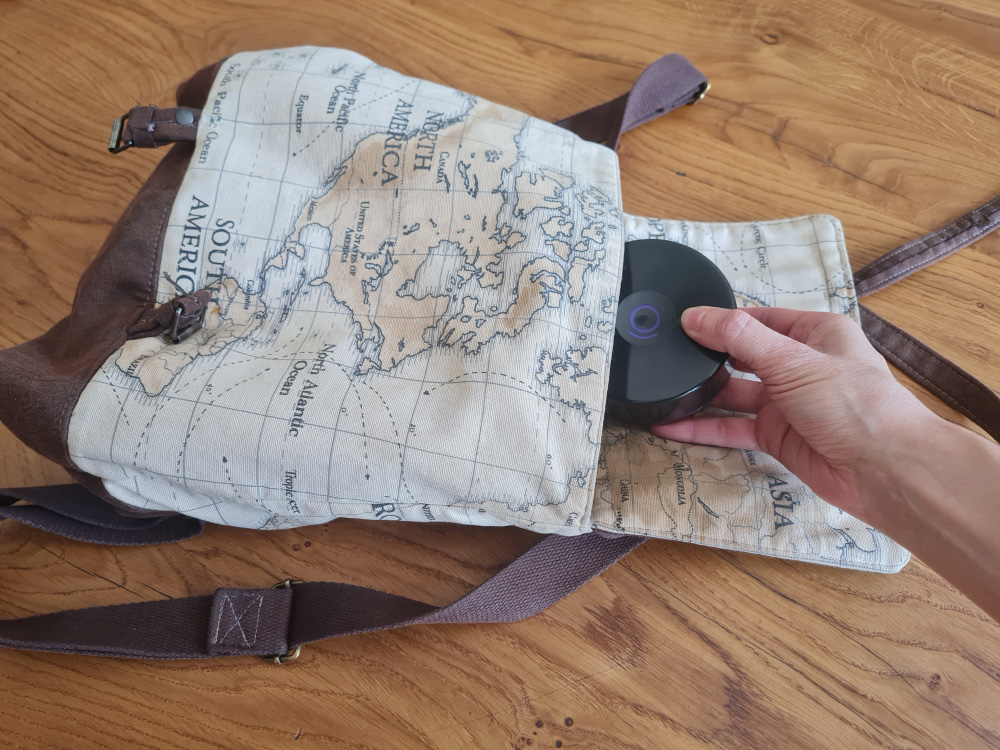

5 Conseils pratiques pour une utilisation au quotidien
Equipement
＋
Pour faciliter la fermeture de la sangle du bracelet, vous pouvez prendre appui sur une surface horizontal telle qu’une table ou votre cuisse.
Confort
＋
Afin que le bracelet soit confortable à porter, il est recommandé d’essayer :
- différents crans d’attache pour trouver le serrage adapté, c’est-à-dire en contact avec la peau mais sans compression. Veillez à ne pas trop serrer votre bracelet Remedee car cela pourrait provoquer des fourmillements dans votre main et laisser des marques rouges sur votre peau.
- différentes positions sur le poignet, plus ou moins rapprochées de la main. Attention à le positionner dans les 5 centimètres en dessous de la main car c’est à cet endroit que les récepteurs nerveux ciblés par les ondes millimétriques sont les plus nombreux.
- de varier le poignet pour le port du bracelet, poignet droit ou poignet gauche. Dans tous les cas, veillez à ne pas porter votre bracelet Remedee à proximité d’objets métalliques tels que des implants chirurgicaux, des bijoux ou des piercings.
Gestion du rechargement
＋
- Le bracelet Remedee doit être rechargé après chaque session. Pour cela, placez-le dans son étui de charge dès l’arrêt de la session, en vous assurant que l’étui soit suffisamment chargé pour assurer la recharge du bracelet.
- Afin que le bracelet reste aimanté à son socle et puisse se recharger correctement, il est préférable de replacer le couvercle du boîtier sur le socle afin de fermer l’étui.
- S’il est probable que vous utilisiez le bracelet pendant la nuit afin de faciliter un ré-endormissement, pensez à conserver votre bracelet chargé à proximité de votre lit.
Mettre en place une routine
＋
- Afin d’intégrer l’utilisation du bracelet Remedee dans votre quotidien et que votre bracelet soit prêt au moment où vous le souhaitez, il est recommandé de planifier les sessions que vous allez réaliser au quotidien.
- Pour faciliter la mise en place de cette nouvelle routine, vous pouvez associer les sessions à quelque chose que vous faîtes déjà tous les jours (le moment des repas, routine d’hygiène, le retour au domicile, etc.)
- Afin de ne pas oublier de faire la prochaine session, vous pouvez programmer une alarme dès la fin de la session en cours.
Emporter son bracelet et faire des sessions à l’extérieur
＋
- L’étui de charge permet de protéger votre bracelet et de le recharger jusqu’à 5 fois sans avoir à être branché sur secteur. Cela vous permet d’emporter votre bracelet avec vous lors de vos déplacements, qu’il s’agisse d’une visite au supermarché ou d’un proche et ainsi de préserver votre routine d’utilisation.
- Afin que le bracelet reste aimanté à son socle et puisse se recharger correctement, il est préférable de replacer le couvercle sur le socle du boîtier afin de fermer l’étui.
- Lors de vos déplacements de plus longues durées, pensez à emporter le câble USB et le bloc secteur. 
Suivre ses sessions
＋
- Afin de suivre le nombre de sessions et les moments au cours de la journée auxquels vous
avez réalisé vos sessions, l’écran d’accueil de votre application Remedee vous informe du nombre de
sessions complétées ce jour.
⚠ Les sessions incomplètes n’apparaissent pas dans le compte de la journée en cours. - Afin de suivre la régularité de votre utilisation et d’identifier les sessions les plus opportunes pour procurer des bénéfices, il est recommandé de consulter l’historique de l'écran principal, ainsi que l’écran « Suivi » de votre application.
Connaître ou savoir retrouver la signification des voyants lumineux
＋
- Les voyants lumineux, cercle et sourire, de votre bracelet vous informe de son état (charge, fonctionnement, dysfonctionnement, configuration).
- Certains de ces voyants deviendront très vite familiers. D’autres ne devraient que rarement (voire jamais)
apparaitre. Toutefois, il est important de savoir identifier chaque voyant et savoir quoi faire. Pour cela, référez- vous à la notice, disponible dans l’écran Documents
 de votre application Remedee, rubrique « 3.1 Signification des voyants lumineux du bracelet Remedee ».
de votre application Remedee, rubrique « 3.1 Signification des voyants lumineux du bracelet Remedee ».
Besoin d’aide ou de poser une question
＋
- Le manuel d’utilisation du bracelet Remedee est disponible dans l’écran Documents de votre application
Remedee. Vous pouvez par exemple y retrouver facilement la signification des voyants du bracelet et
les indications pour effectuer les manipulations principales.
- Si besoin, vous avez aussi la possibilité de solliciter votre coach pour toutes remarques, questions ou difficulté à partir de l’écran « Coach ».